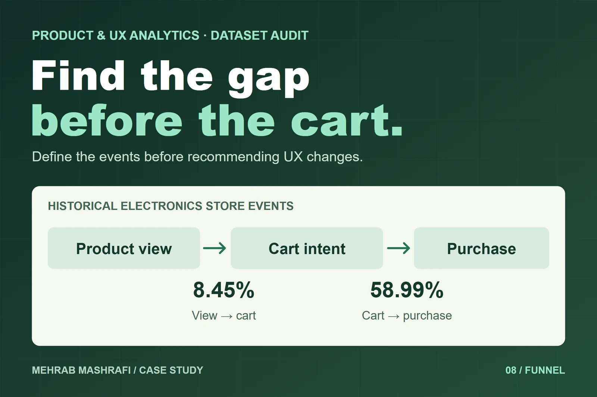
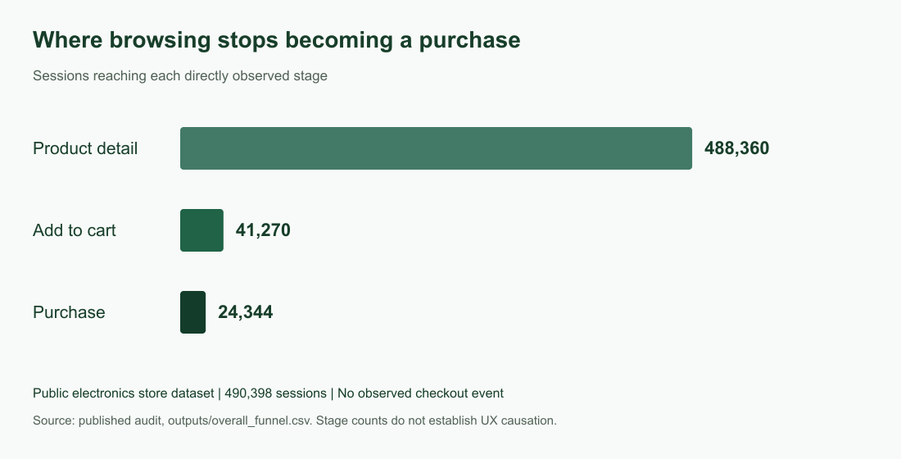

Product & UX analytics · Public dataset analysis
Find where browsing stops becoming a purchase
The largest measurable loss in this public electronics store dataset happened before shoppers added to cart. I analysed the event journey to separate that finding from checkout assumptions and give a product team specific questions to investigate.

- My role
- Analyst, session preparation and funnel interpretation
- Work
- Event cleaning, session analysis, segment comparisons and propensity modelling
- Project context
- Historical public dataset analysis, no client store changes
01 / Question
Where does browsing stop becoming intent?
A low purchase rate can tempt a team to start with checkout. I examined a historical electronics store clickstream to find which stage actually lost the most sessions before choosing a UX review priority.
The dataset records views, cart events and purchases. Those events provide a useful journey, but they do not record the reason a person leaves or a separate checkout step.
02 / My work
Define a funnel the events can support.
I cleaned 884,964 events and grouped them into 490,398 sessions. I then compared journeys by category, product and behavioural segment, keeping the stage definitions consistent across those views.
Cart behaviour was the measurable intent stage. The generic preparation pipeline reused a cart flag as a checkout intent proxy, so I separated that technical label from the interpretation: no distinct checkout event was available.
This decision prevented a cart to purchase gap from being presented as a diagnosis of a particular checkout screen.
Three observed stages, two different conversions
- PRODUCT DETAIL
488,360 sessions
Sessions reaching a product view - 8.45% REACHED CART
41,270 sessions
Observed cart intent - 58.99% REACHED PURCHASE
24,344 sessions
Purchase after cart intent
03 / Finding
Investigate the move from product detail to cart.
Of 488,360 sessions reaching product detail, 41,270 reached cart and 24,344 reached purchase. Product detail to cart conversion was 8.45%; among cart sessions, 58.99% reached purchase.
The largest measured loss was before cart. I used category comparisons to identify where product information, comparison and navigation deserved closer review. A propensity model also explored high intent non buyers as a queue for investigation.
The model and segment patterns are ways to prioritise questions. They do not identify an individual’s motive or show that a proposed interface change will increase purchases.

04 / Next decision
Turn the pattern into a testable UX question.
The result was a clearer starting point for product investigation: inspect the information and choices people encounter before adding an item, rather than assume checkout was the main bottleneck.
A useful next check is whether important product information is missing or difficult to compare. Another is whether records in an unknown category reflect a taxonomy problem. Observation and a controlled change would be needed to evaluate either explanation.
This work analysed a public historical dataset. It did not redesign a live client store or deliver a measured conversion lift.
Cleaned events
884,964
Public historical electronics store events.
Analysed sessions
490,398
Sessions aggregated from the cleaned events.
Stage counts are subsets of the analysed sessions. They describe observed behaviour, not an effect caused by a UX change.
Explore the work
Which funnel stage deserves your attention first?
Bring your event definitions and the product decision you need to make. We can separate an observed loss from an explanation to test.
Discuss a funnel analysis ↗ Email meProject experience by Mehrab Mashrafi. Updated .